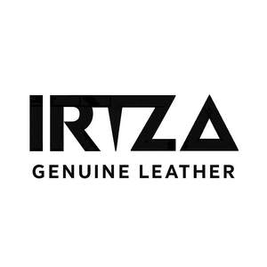

Trade Mark Journal No.2025/040 3 October 2025
UK00004267350 21 September 2025 (9,18)

- Class 9
- Shoes (Protective -); Boots [protective footwear]; Protective industrial boots; Protective goggles; Protective helmets; Helmets (Protective -); Protective headgear; Protective face-shields for protective helmets; Protective industrial shoes; Protective visors; Visors [protective]; Headgear being protective helmets; Dust protective goggles; Protective eyeglasses; Tactical protective clothing; Protective glasses; Protective eyewear; Protective clothing made from ballistic resistant materials; Dust protective masks; Protective helmets for sports; Protective helmets for use in sports; Helmets (Protective -) for sports; Sports (Protective helmets for -); Protective sports helmets; Protective spectacles; Protective clothing [body armour]; Insulating gloves for protection against accidents; Leather cases for cellular phones; Leather cases for mobile phones; Leather cases for smartphones; Phone cases; Mobile telephone cases made of leather or imitations of leather; Cell phone cases; Leather cases for tablet computers; Mobile phone cases; Protective cases for cell phones; Waterproof smartphone cases; Carrying cases for cell phones; Carrying cases for cellular phones; Protective cases for mobile phones; Waterproof cases for smart phones; Cellular telephone cases; Cases for mobile phones; Waterproof cases for smartphones; Mobile telephone cases; Carrying cases for mobile phones; Cases for telephones; Carrying cases for cellular telephones; Laptop cases; Protective cases for smartphones; Cases for smartphones; Carrying cases for mobile telephones; Keyboard cases for smartphones; Waterproof camera cases; Cases for sunglasses; Cases for headphones; Camera cases; Laptop carrying cases; Protective cases for tablet computers; Sunglass cases; Cases adapted for mobile phones; Camcorder waterproof cases; Protective cases for laptops; Cell phone straps; Cell phone covers; Cases for smartphone incorporating a keyboard; Cases for PDAs; Carrying cases for mobile computers; Tablet computer cases; Protective covers for cell phones; Battery cases; Cases for tablet computers; Beeper carrying cases; Straps for cellular phones; Computer cases; Camcorder cases; Boxes [cases] for sunglasses; Cases for eyeglasses; Notebook computer carrying cases; Computer carrying cases; Mobile phone straps; Mobile phone covers; Flip covers for cellular phones; Carrying cases for radios; Eyewear cases; Cases for eyewear; Eyeglass cases; Cases (Eyeglass -); Straps for telephone handsets; Screen protectors for cell phones; Dashboard mats adapted for holding cell phones and smartphones; Glasses cases; Mobile phone screen protectors; Hands-free headsets for cell phones; Chargers for cell phone; Camera straps; Straps for sunglasses; Helmet camera mounts; Camera goggles; Camera casings; Smartphone camera lenses; Camera mounts; Camera hoods; Adapter rings for camera lenses; Camera lens mounts; Camera monopods; Camera bipods; Camera lenses; Camera tripods; Camera covers; Helmet cameras; Spectacle straps; Hands-free holders for cell phones; Mobile phone ring holders; Mobile telephone covers made of cloth or textile materials; In-car telephone handset cradles; Cell phone battery chargers; Mobile phone ring stands; Mobile phone display screen protectors in the nature of films; Phone plugs.
- Class 18
- School book bags; Bags for school; School bags; School knapsacks; Randsels [Japanese school satchels]; Satchels (School -); School satchels; School backpacks; Briefcases [leather goods]; Key cases [leather goods]; Belt pouches; Belt bags; Shoulder belts; Leather shoulder belts; Belts (Leather shoulder -); Saddle belts; Shoulder belts [straps] of leather; Belt bags and hip bags; Wallets for attachment to belts; Fitted belts for luggage; Pocket wallets; Wallets (Pocket -); Leather credit card wallets; Card wallets; Card wallets [leatherware]; Wallets; Credit card wallets; Wallets with card compartments; Leather wallets; Key wallets; Business card holders in the nature of wallets; Ankle-mounted wallets; Leather bags and wallets; Credit card cases [wallets]; Nappy wallets; Wallets, not of precious metal; Wallets [not of precious metal]; Holders in the nature of wallets for keys; Wallets incorporating card holders; Wallets including card holders; Leather credit card holder; Wallets of precious metal; Coin purse frames; Credit card holders made of leather; Leather coin purses; Coin purses, not of precious metal; Credit card holders made of imitation leather; Coin purses not made of precious metal; Leather credit card cases; Coin purses, not of precious metals; Billfolds; Tool bags of leather, empty; Handbags, purses and wallets; Luggage, bags, wallets and other carriers; Card holders made of leather; Wallets incorporating RFID blocking technology; Purse frames; Horse halters; Horse collars; Halters; Harness for horses; Bridles [harness]; Horse bridles; Blinkers [harness]; Reins [harness]; Cribbing straps for horses; Horse saddles; Blinkers for horses; Harness made from leather; Harness; Numnahs; Covers for horse saddles; Bridles for horses; Harness straps; Straps (Harness -); Lunge reins; Saddle cloths for horses; Dog collars; Training leads for horses; Pads for horse saddles; Saddles (Pads for horse -); Knee-pads for horses; Straps of leather [saddlery]; Blinkers for horses [blinders for horses]; Dog bellybands; Horse tail wraps; Dog leashes; Leather for harnesses; Fastenings for saddles; Harness fittings; Fittings (Harness -); Harness for animals; Leather leashes; Leashes (Leather -); Straps (Leather shoulder -); Leather shoulder straps; Animal harnesses; Chin straps, of leather; Lead reins; Saddlecloths for horses; Horse covers; Saddlery of leather; Horse blankets; Harness fittings of iron; Dog leads; Blinders [harness]; Martingales; Riding saddles; Bridles [harnessing]; Pet hair bows; Equine boots; Horse rugs; Saddlery, whips and apparel for animals; Headbands for horses; Saddlery; Horse cloths; Equine leg wraps; Blinders for horses; Animal apparel; Leather; Leather cloth; Polyurethane leather; Leather for shoes; Leather straps; Straps (Leather -); Laces (Leather -); Leather laces; Leather and imitation leather; Valves of leather; Leather cords; Studs of leather; Leather and imitations of leather; Leather thongs; Leather cord; Leather bags; Leather pouches; Pouches of leather; Synthetic leather; All-purpose leather straps; Leather handbags; Leather purses; Handbags made of leather; Handbags; Handbags made of imitations leather; Imitation leather bags; Leather briefcases; Purses [leatherware]; Leather suitcases; Straps for handbags; Clutch purses [handbags]; Leather shopping bags; Bags made of imitation leather; Leather for furniture; Bags made of leather; Briefcases made of leather; Leather luggage straps; Briefcases [leatherware]; Imitation leather; Leather (Imitation -); Imitations of leather; Clutch handbags; Moleskin [imitation of leather]; Moleskin [imitation leather]; Boxes of leather or leather board; Fashion handbags; Travelling bags made of imitation leather; Tanned leather; Purse frames [handbags]; Leather boxes; Boxes of leather; Garment bags for travel made of leather; Leather luggage tags; Slouch handbags; Handbags for ladies; Ladies handbags; Furniture coverings of leather; Coverings (Furniture -) of leather; Pocketbooks [handbags]; Travelling bags made of leather; Vegan leather; Girths of leather; Adhesive tags of leather for bags; Straps made of imitation leather; Handbags for men; Sew-on tags of leather for clothing; Cases of imitation leather; Handbag straps; Trimmings of leather for furniture; Furniture (Leather trimmings for -); Leather trimmings for furniture; Leather cases; Imitation leather hat boxes; Purses, not of precious metal [handbags]; Labels of leather; Sheets of imitation leather for use in manufacture; Pouches, of leather, for packaging; Purses; Clutches [purses]; Coin purses; Straps for coin purses; Frames for coin purses [structural parts of coin purses]; Clutch purses; Cosmetic purses; Purses, not made of precious metal [handbags]; Boxes of leather (Hat -); Hat boxes of leather; Purses of precious metal; Small clutch purses; Multi-purpose purses; Bags [envelopes, pouches] of leather, for packaging; Bags [envelopes, pouches] of leather for packaging; Bags [envelopes, pouches] for packaging of leather; Wrist mounted purses; Small purses; Change purses of precious metal; Shoe bags; Purses made of precious metal; Purses, not of precious metal; Purses [not of precious metal]; Card holders made of imitation leather; Chain mesh purses; Leather or leather-board boxes; Coin holders; Crossbody bags; Backpacks; Duffel bags; Rucksacks; Document cases of leather; Document holders [carrying cases]; Attache cases made of leather; Leather cases for keys; Attache cases made of imitation leather; Luggage label holders; Leather key cases; Key cases of leather; Banknote holders; Key cases made of leather; Boxes made of leather; Leather thread; Thread (Leather -); Document cases; Sheets of leather for use in manufacture; Envelopes, of leather, for packaging; Luggage; Luggage tags [leatherware]; Cosmetic bags; Travelling cases of leather; Cases of leather or leatherboard; Cases, of leather or leatherboard; Key cases of imitation leather; Briefcases and attache cases; Folio cases; Portfolio cases [briefcases]; Attache cases; Boxes of leather or leatherboard; Cases for keys; Cat collars; Collars for pets; Collars for cats; Electronic pet collars; Dog shoes; Collars for animals; Collars of animals; Dog clothing; Raincoats for pet dogs; Dog parkas; Dog coats; Animal leashes; Dog apparel; Clothing for dogs; Rawhide chews for dogs; Dog waste bag dispensers adapted for use with leashes; Coats for dogs; Leashes for animals; Bands of leather; Casings, of leather, for springs; Stirrup leathers; Leathers (Stirrup -); Key-cases of leather and skins; Leather twist; Unworked leather; Wrist mounted carryall bags; Shoulder straps; Straps for luggage; Luggage straps; Stirrup straps; Lockable luggage straps; Saddlebags; Calling card cases.
Crazy Trend Ltd